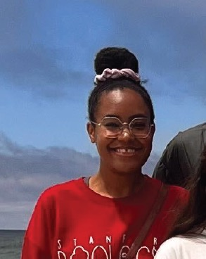
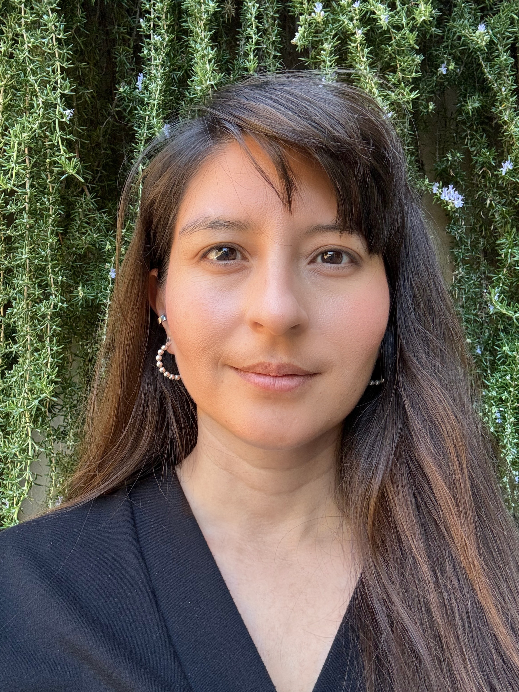
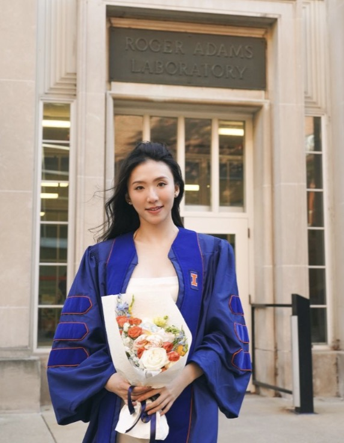
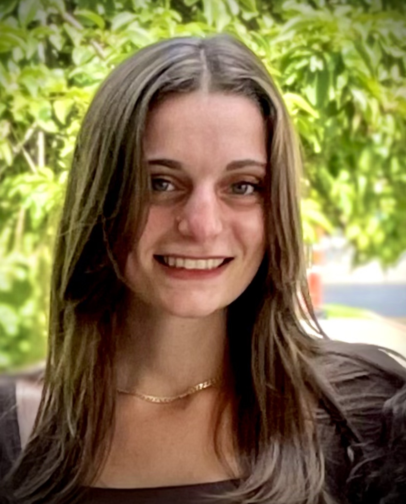
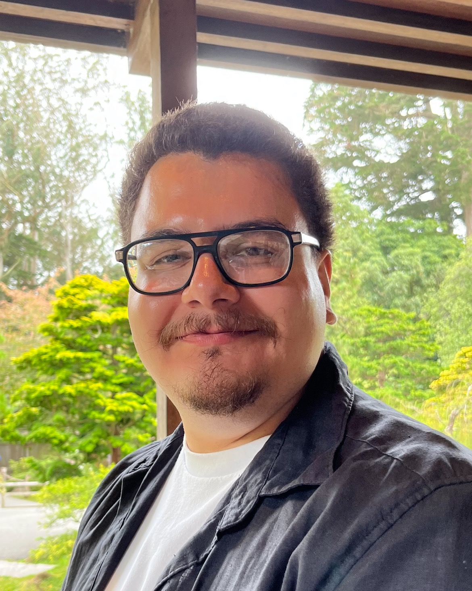
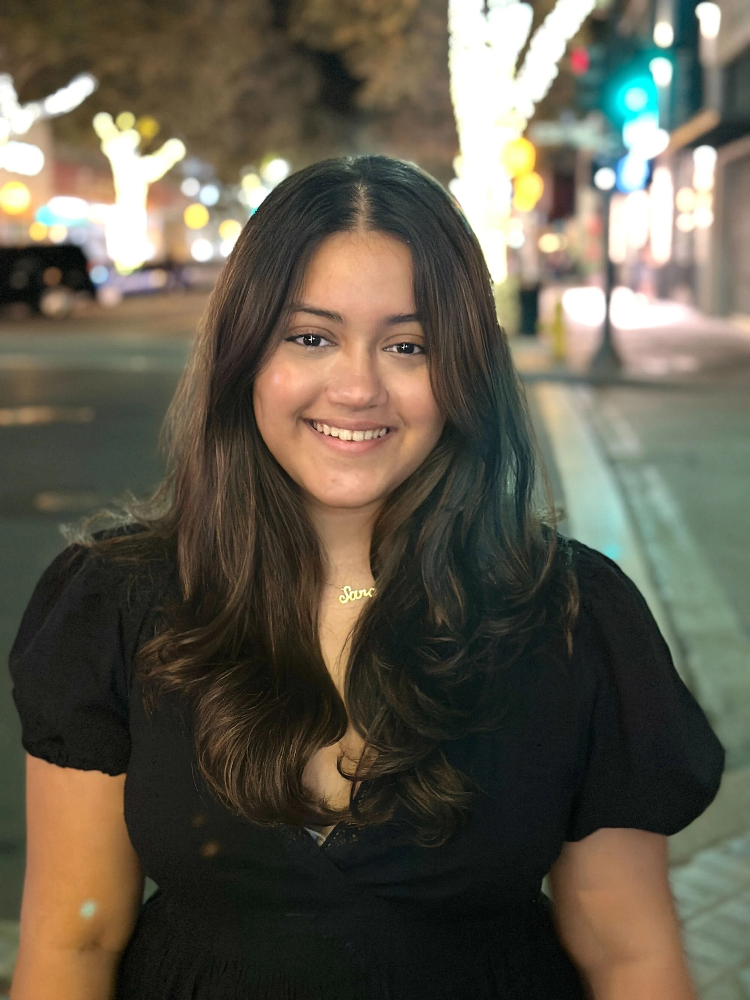
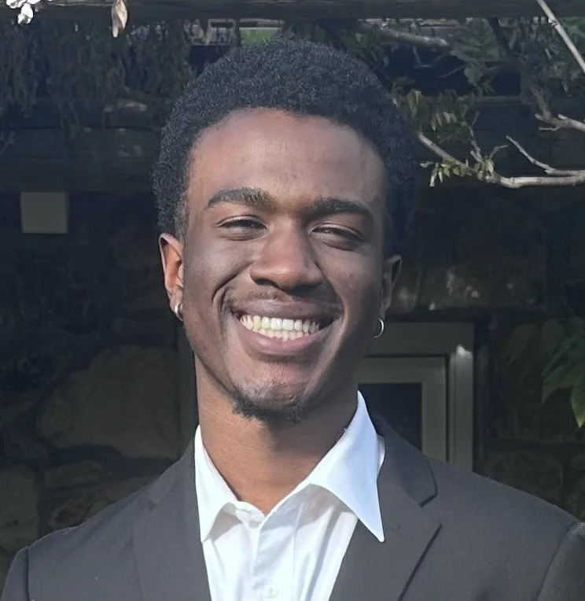

Postdoctoral Scholar · PRISM Fellow
Claire Stewart, Ph.D.
Claire earned her Ph.D. in Chemistry from the University of North Carolina at Chapel Hill, where she conducted research with Gary Pielak.
cjstew@stanford.eduThe people behind the science

Principal Investigator
Naima earned her undergraduate degree in Chemistry at the University of North Carolina at Chapel Hill and completed her Ph.D. at the University of Pittsburgh in Angela Gronenborn’s lab, using fluorine solution NMR to study inhibitor-induced conformational changes in HIV-1 reverse transcriptase.
During her postdoctoral training at Caltech with Doug Rees, she used biophysical and biochemical tools to characterize the Neisseria meningitidis methionine ABC transport system. Her lab now connects biochemistry, structural biology, microbiology, and immunology to translate lipoprotein research into new therapeutic and biomaterial possibilities.
Researchers

Postdoctoral Scholar · PRISM Fellow
Claire earned her Ph.D. in Chemistry from the University of North Carolina at Chapel Hill, where she conducted research with Gary Pielak.
cjstew@stanford.edu
Postdoctoral Scholar
Heather earned her Ph.D. in Biochemistry at the University of Illinois Urbana-Champaign, studying the structures and functions of human and bacterial Immunoglobulin A receptors.
QL8@stanford.edu
Ph.D. Candidate
Francesca brings a background in polymer chemistry and biomedical engineering to the development of novel protein-based biomaterials.
fstar@stanford.edu
Ph.D. Candidate
Victor studied Molecular Biophysics and Biochemistry at Yale University, where he explored receptor tyrosine kinase structure and function.


Undergraduate Researcher
Uchenna is interested in chemical engineering and joined the lab through Stanford’s BSURP summer program.
Our community
Aylin RangelCOOP summer intern
Jaedyn HoenigUndergraduate student
Marc ArslanianUndergraduate student · Medical School
Matthew TreviñoUndergraduate student
Scott WestonTechnician · Graduate School, Miami
Kofi AmankwahTechnician · Genentech
Jaime Morales GallardoTechnician
Steven DiazUndergraduate student
Abood MohaisenCOOP summer intern
Jasmine PadillaUndergraduate student
Duke Emil EscobarTechnician · University of Hawaii JABSOM
Brandon AponteUndergraduate student
Aylin Torres RangelMission College